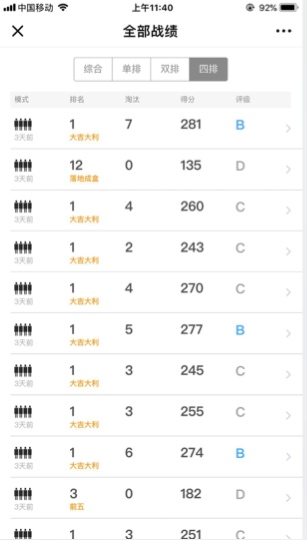
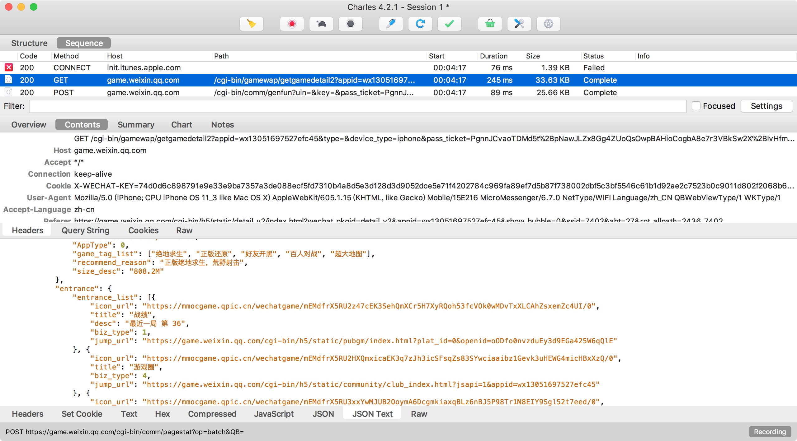
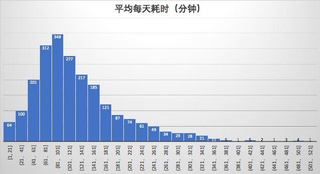
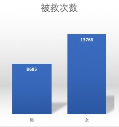
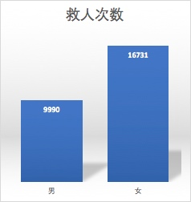
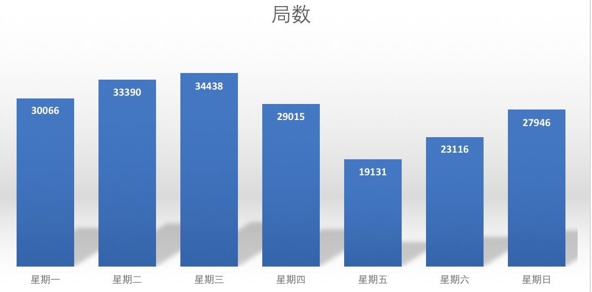
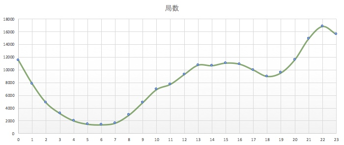
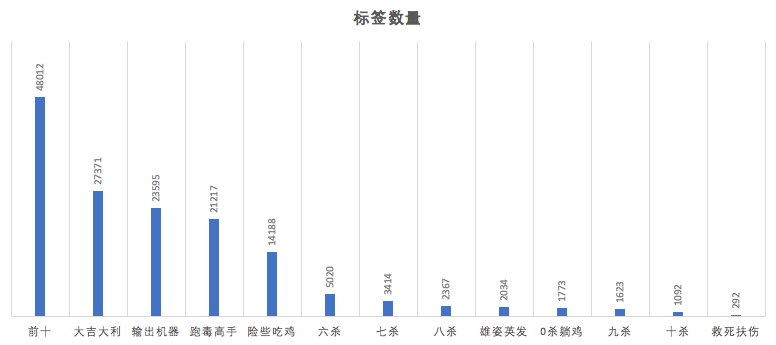
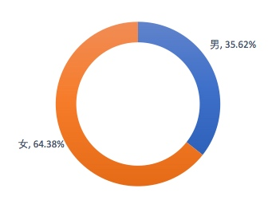

用python分析了20万场吃鸡数据
首先，神枪镇楼
背景
最近老板爱上了吃鸡（手游：全军出击），经常拉着我们开黑，只能放弃午休的时间，陪老板在沙漠里奔波。
上周在在微信游戏频道看战绩的时候突发奇想，是不是可以通过这个方式抓取到很多战斗数据，然后分析看看有什么规律。

秀一波战绩，开黑情况下我们团队吃鸡率非常高，近100场吃鸡次数51次
简单评估了一下，觉得可行，咱就撸起袖子干。
Step 1 分析数据接口
第一步当然是把这些战绩数据采集下来，首先我们需要了解页面背后的故事。去看看页面是如何获取战斗数据的。
使用Charles抓包
抓包实现
在Mac下推荐使用工具Charles来从协议层抓取手机上的流量，原理就是在Mac上开启一个代理服务器，然后将手机的网络代理设置为Mac，这样手机上的所有流量都会经过我们的代理服务器了。
大致流程如下：
participant iPhone
participant MacBook Charles
participant 微信平台
iPhone->MacBook Charles:请求game.weixin.qq.com
MacBook Charles->微信平台:转发请求
微信平台-->MacBook Charles:响应
MacBook Charles-->iPhone:转发响应
https加密流量的处理
在实际操作的时候发现微信所有的流量都走了HTTPS，导致我们的抓到的都是加密数据，对我们没有任何参考意义。
经过研究，可以通过在手机和电脑都安装Charles根证书的方式来实现对Https流量的分析，具体操作可以参考：
安装证书后，我们的流量大致是这样子的
participant iPhone
participant MacBook Charles
participant 微信平台
iPhone->MacBook Charles:https握手请求
MacBook Charles->MacBook Charles:假装自己是服务器
MacBook Charles-->iPhone:响应加密算法和证书A
iPhone->MacBook Charles:https GET请求
MacBook Charles->MacBook Charles:按A 解密https请求
MacBook Charles->微信平台:https握手请求
微信平台-->MacBook Charles:响应加密算法和证书B
MacBook Charles->微信平台:按B加密 https GET请求
微信平台-->MacBook Charles:response
MacBook Charles->MacBook Charles:按B 解密response
MacBook Charles-->iPhone:响应按A 加密response
iPhone->iPhone:按A解密response
经过上述的配置，我们已经可以读取到https的请求和响应数据了，如下图所示。

- windows下用findler可以实现相同的功能
- 其实这就是一个非常典型的中间人场景
数据接口
接下来就根据这些数据来找出我们需要的接口了，经过分析，主要涉及三个接口
- 获取用户信息接口
- 获取用户战绩列表接口
- 获取用户指定战绩详细信息接口
下面我们一个一个看
1. 获取用户信息接口
request
API /cgi-bin/gamewap/getpubgmdatacenterindex 方法 GET 参数 openid、pass_ticket cookie key pass_ticket、uin、pgv_pvid、sd_cookie_crttime、sd_userid response
{ "user_info": { "openid": "oODfo0pjBQkcNuR4XLTQ321xFVws", "head_img_url": "http://wx.qlogo.cn/mmhead/Q3auHgzwzM5hSWxxxxxUQPwW9ibxxxx9DlxLTsKWk97oWpDI0rg/96", "nick_name": "望", "role_name": "xxxx", "zone_area_id": 0, "plat_id": 1 }, "battle_info": { "total_1": 75, "total_10": 336, "total_game": 745, "total_kill": 1669 }, "battle_list": [{ "map_id": 1, "room_id": "6575389198189071197", "team_id": 57, "dt_event_time": 1530953799, "rank_in_ds": 3, "times_kill": 1, "label": "前五", "team_type": 1, "award_gold": 677, "mode": 0 }], "appitem": { "AppID": "wx13051697527efc45", "IconURL": "https://mmocgame.qpic.cn/wechatgame/mEMdfrX5RU0dZFfNEdCsMJpfsof1HE0TP3cfZiboX0ZPxqh5aZnHjxPFXUGgsXmibe/0", "Name": "绝地求生 全军出击", "BriefName": "绝地求生 全军出击", "Desc": "官方正版绝地求生手游", "Brief": "枪战 | 808.2M", "WebURL": "https://game.weixin.qq.com/cgi-bin/h5/static/detail_v2/index.html?wechat_pkgid=detail_v2&appid=wx13051697527efc45&show_bubble=0", "DownloadInfo": { "DownloadURL": "https://itunes.apple.com/cn/app/id1304987143", "DownloadFlag": 5 }, "Status": 0, "AppInfoFlag": 45, "Label": [], "AppStorePopUpDialogConfig": { "Duration": 1500, "Interval": 172800, "ServerTimestamp": 1531066098 }, "HasEnabledChatGroup": false, "AppType": 0, "game_tag_list": ["绝地求生", "正版还原", "好友开黑", "百人对战", "超大地图"], "recommend_reason": "正版绝地求生，荒野射击", "size_desc": "808.2M" }, "is_guest": true, "is_blocked": false, "errcode": 0, "errmsg": "ok" }分析
openid是用户的惟一标识。
2. 获取用户战绩列表接口
request
API /cgi-bin/gamewap/getpubgmbattlelist 方法 GET 参数 openid、pass_ticket、plat_id、after_time、limit cookie key pass_ticket、uin、pgv_pvid、sd_cookie_crttime、sd_userid response
{ "errcode": 0, "errmsg": "ok", "next_after_time": 1528120556, "battle_list": [{ "map_id": 1, "room_id": "6575389198111172597", "team_id": 57, "dt_event_time": 1530953799, "rank_in_ds": 3, "times_kill": 1, "label": "前五", "team_type": 1, "award_gold": 677, "mode": 0 }, { "map_id": 1, "room_id": "6575336498940384115", "team_id": 11, "dt_event_time": 1530941404, "rank_in_ds": 5, "times_kill": 2, "label": "前五", "team_type": 1, "award_gold": 632, "mode": 0 }], "has_next": true }分析
- 这个接口用after_time来进行分页，遍历获取时可以根据接口响应的has_next和next_after_time来判断是否还有下一页的数据。
- 列表里面的room_id是每一场battle的惟一标识。
3. 获取用户战绩详情接口
request
API /cgi-bin/gamewap/getpubgmbattledetail 方法 GET 参数 openid、pass_ticket、room_id cookie key pass_ticket、uin、pgv_pvid、sd_cookie_crttime、sd_userid response
{ "errcode": 0, "errmsg": "ok", "base_info": { "nick_name": "柚茶", "head_img_url": "http://wx.qlogo.cn/mmhead/xxxx/96", "dt_event_time": 1528648165, "team_type": 4, "rank": 1, "player_count": 100, "role_sex": 1, "label": "大吉大利", "openid": "oODfo0s1w5lWjmxxxxxgQkcCljXQ" }, "battle_info": { "award_gold": 622, "times_kill": 6, "times_head_shot": 0, "damage": 537, "times_assist": 3, "survival_duration": 1629, "times_save": 0, "times_reborn": 0, "vehicle_kill": 1, "forward_distance": 10140, "driving_distance": 5934, "dead_poison_circle_no": 6, "top_kill_distance": 223, "top_kill_distance_weapon_use": 2924130819, "be_kill_user": { "nick_name": "小旭", "head_img_url": "http://wx.qlogo.cn/mmhead/ibLButGMnqJNFsUtStNEV8tzlH1QpwPiaF9kxxxxx66G3ibjic6Ng2Rcg/96", "weapon_use": 20101000001, "openid": "oODfo0qrPLExxxxc0QKjFPnPxyI" }, "label": "大吉大利" }, "team_info": { "user_list": [{ "nick_name": "ooo", "times_kill": 6, "assist_count": 3, "survival_duration": 1638, "award_gold": 632, "head_img_url": "http://wx.qlogo.cn/mmhead/Q3auHgzwzM4k4RXdyxavNxxxxUjcX6Tl47MNNV1dZDliazRKRg", "openid": "oODfo0xxxxf1bRAXE-q-lEezK0k" }, { "nick_name": "我吃炒肉", "times_kill": 2, "assist_count": 2, "survival_duration": 1502, "award_gold": 583, "head_img_url": "http://wx.qlogo.cn/mmhead/sTJptKvBQLKd5SAAjOF0VrwiapUxxxxFffxoDUcrVjYbDf9pNENQ", "openid": "oODfo0gIyDxxxxZpUrSrpapZSDT0" }] }, "is_guest": true, "is_blocked": false }分析
- 这个接口响应了战斗的详细信息，包括杀人数、爆头数、救人数、跑动距离等等，足够我们分析了。
- 这个接口还响应了是被谁杀死的以及组团成员的openid，利用这个特性我们这可无限深度的发散爬取更多用户的数据。
至于cookie中的息pass_ticket等信息肯定是用于权限认证的，在上述的几次请求中这些信息都没有变化，所以我们不需要深研其是怎么算出来的，只需要抓包提取到默认信息后填到代码里面就可以用了。
Step 2 爬取数据
接口已经确定下来了，接下来就是去抓取足够量的数据了。
使用requests请求接口获取数据
url = 'https://game.weixin.qq.com/cgi-bin/gamewap/getpubgmdatacenterindex?openid=%s&plat_id=0&uin=&key=&pass_ticket=%s' % (openid, settings.pass_ticket)
r = requests.get(url=url, cookies=settings.def_cookies, headers=settings.def_headers, timeout=(5.0, 5.0))
tmp = r.json()
wfile = os.path.join(settings.Res_UserInfo_Dir, '%s.txt' % (rediskeys.user(openid)))
with codecs.open(wfile, 'w', 'utf-8') as wf:
wf.write(simplejson.dumps(tmp, indent=2, sort_keys=True, ensure_ascii=False))
参照这种方式我们可以很快把另外两个接口写好。
使用redis来标记已经爬取过的信息
在上述接口中我们可能从用户A的入口进去找到用户B的openid，然后从用户B的入口进去又找到用户A的openid，为了避免重复采集，所以我们需要记录下哪些信息是我们采集过的。
核心代码片断
# rediskeys.user_battle_list 根据openid获取存在redis中的key值
def user_battle_list(openid):
return 'ubl_%s' % (openid)
# 在提取battle list之前，首先判断这用用户的数据是否已经提取过了
if settings.DataRedis.get(rediskeys.user_battle_list(openid)):
return True
# 在提取battle list之后，需要在redis中记录用户信息
settings.DataRedis.set(rediskeys.user_battle_list(openid), 1)
使用celery来管理队列
celery是一个非常好用的分布式队列管理工具，我这次只打算在我自己的电脑上运行，所以并没有用到分布式的功能。
我们创建三个task和三个queue
task_queues = (
Queue('queue_get_battle_info', exchange=Exchange('priority', type='direct'), routing_key='gbi'),
Queue('queue_get_battle_list', exchange=Exchange('priority', type='direct'), routing_key='gbl'),
Queue('queue_get_user_info', exchange=Exchange('priority', type='direct'), routing_key='gui'),
)
task_routes = ([
('get_battle_info', {'queue': 'queue_get_battle_info'}),
('get_battle_list', {'queue': 'queue_get_battle_list'}),
('get_user_info', {'queue': 'queue_get_user_info'}),
],)
然后在task中控制API请求和Redis数据实现完整的任务逻辑，如：
@app.task(name='get_battle_list')
def get_battle_list(openid, plat_id=None, after_time=0, update_time=None):
# 判断是否已经取过用户战绩列表信息
if settings.DataRedis.get(rediskeys.user_battle_list(openid)):
return True
if not plat_id:
try:
# 提取用户信息
us = handles.get_user_info_handles(openid)
plat_id=us['plat_id']
except Exception as e:
print 'can not get user plat_id', openid, traceback.format_exc()
return False
# 提取战绩列表
battle_list = handles.get_battle_list_handle(openid, plat_id, after_time=0, update_time=None)
# 为每一场战斗创建异步获取详情任务
for room_id in battle_list:
if not settings.DataRedis.get(rediskeys.user_battle(openid, room_id)):
get_battle_info.delay(openid, plat_id, room_id)
return True
开始抓取
因为我们是发散是爬虫，所以需要给代码一个用户的入口，所以需要手动创建一个用户的采集任务
from tasks.all import get_battle_list
my_openid = 'oODfo0oIErZI2xxx9xPlVyQbRPgY'
my_platid = '0'
get_battle_list.delay(my_openid, my_platid, after_time=0, update_time=None)
有入口之后我们就用celery来启动worker去开始爬虫
# 启动获取用户详情worker
celery -A tasks.all worker -c 5 --queue=queue_get_user_info --loglevel=info -n get_user_info@%h
# 启动获取战绩列表worker
celery -A tasks.all worker -c 5 --queue=queue_get_battle_list --loglevel=info -n get_battle_list@%h
# 启动获取战绩详情worker
celery -A tasks.all worker -c 30 --queue=queue_get_battle_info --loglevel=info -n get_battle_info@%h
这样我们的爬虫就可以愉快的跑起来了。再通过celery-flower来查看执行情况。
celery flower -A tasks.all --broker=redis://:$REDIS_PASS@$REDIS_HOST:$REDIS_PORT/10
通过flower，我们可以看到运行的效率还是非常不错的。

在执行过程中会发现get_battle_list跑太快，导致get_battle_info即使开了30个并发都还会积压很多，所以需要适时的去停一下这些worker。
在我们抓到20万条信息之后就可以停下来了。
Step 3 数据分析
分析方案
20万场战斗的数据已经抓取好了，全部分成json文件存在我本地磁盘上，接下来就做一些简单的分析。
python在数据分析领域也非常强大，有很多非常优秀的库，如pandas和NumPy，可惜我都没有学过，而且对于一个高考数学只考了70几分的人来说，数据分析实在是难，所以就自己写了一个非常简单的程序来做一些浅度分析。
需要进行深度分析，又不想自己爬虫的大牛可以联系我打包这些数据。
# coding=utf-8
import os
import json
import datetime
import math
from conf import settings
class UserTeamTypeData:
def __init__(self, team_type, player_count):
self.team_type = team_type
self.player_count = player_count
self.label = {}
self.dead_poison_circle_no = {}
self.count = 0
self.damage = 0
self.survival_duration = 0 # 生存时间
self.driving_distance = 0
self.forward_distance = 0
self.times_assist = 0 # 助攻
self.times_head_shot = 0
self.times_kill = 0
self.times_reborn = 0 # 被救次数
self.times_save = 0 # 救人次数
self.top_kill_distance = []
self.top_kill_distance_weapon_use = {}
self.vehicle_kill = 0 # 车辆杀死
self.award_gold = 0
self.times_reborn_by_role_sex = {0: 0, 1: 0} # 0 男 1 女
self.times_save_by_role_sex = {0: 0, 1: 0} # 0 男 1 女
def update_dead_poison_circle_no(self, dead_poison_circle_no):
if dead_poison_circle_no in self.dead_poison_circle_no:
self.dead_poison_circle_no[dead_poison_circle_no] += 1
else:
self.dead_poison_circle_no[dead_poison_circle_no] = 1
def update_times_reborn_and_save_by_role_sex(self, role, times_reborn, times_save):
if role not in self.times_reborn_by_role_sex:
return
self.times_reborn_by_role_sex[role] += times_reborn
self.times_save_by_role_sex[role] += times_save
def update_top_kill_distance_weapon_use(self, weaponid):
if weaponid not in self.top_kill_distance_weapon_use:
self.top_kill_distance_weapon_use[weaponid] = 1
else:
self.top_kill_distance_weapon_use[weaponid] += 1
class UserBattleData:
def __init__(self, openid):
self.openid = openid
self.team_type_res = {}
self.label = {}
self.hour_counter = {}
self.weekday_counter = {}
self.usetime = 0
self.day_record = set()
self.battle_counter = 0
def get_avg_use_time_per_day(self):
# print "get_avg_use_time_per_day:", self.openid, self.usetime, len(self.day_record), self.usetime / len(self.day_record)
return self.usetime / len(self.day_record)
def update_label(self, lable):
if lable in self.label:
self.label[lable] += 1
else:
self.label[lable] = 1
def get_team_type_data(self, team_type, player_count):
player_count = int(math.ceil(float(player_count) / 10))
team_type_key = '%d_%d' % (team_type, player_count)
if team_type_key not in self.team_type_res:
userteamtypedata = UserTeamTypeData(team_type, player_count)
self.team_type_res[team_type_key] = userteamtypedata
else:
userteamtypedata = self.team_type_res[team_type_key]
return userteamtypedata
def update_user_time_property(self, dt_event_time):
dt_event_time = datetime.datetime.fromtimestamp(dt_event_time)
hour = dt_event_time.hour
if hour in self.hour_counter:
self.hour_counter[hour] += 1
else:
self.hour_counter[hour] = 1
weekday = dt_event_time.weekday()
if weekday in self.weekday_counter:
self.weekday_counter[weekday] += 1
else:
self.weekday_counter[weekday] = 1
self.day_record.add(dt_event_time.date())
def update_battle_info_by_room(self, roomid):
# print ' load ', self.openid, roomid
file = os.path.join(settings.Res_UserBattleInfo_Dir, self.openid, '%s.txt' % roomid)
with open(file, 'r') as rf:
battledata = json.load(rf)
self.battle_counter += 1
base_info = battledata['base_info']
self.update_user_time_property(base_info['dt_event_time'])
battle_info = battledata['battle_info']
userteamtypedata = self.get_team_type_data(base_info['team_type'], base_info['player_count'])
userteamtypedata.count += 1
userteamtypedata.award_gold += battle_info['award_gold']
userteamtypedata.damage += battle_info['damage']
userteamtypedata.update_dead_poison_circle_no(battle_info['dead_poison_circle_no'])
userteamtypedata.driving_distance += battle_info['driving_distance']
userteamtypedata.forward_distance += battle_info['forward_distance']
self.update_label(battle_info['label'])
userteamtypedata.survival_duration += battle_info['survival_duration']
self.usetime += battle_info['survival_duration']/60
userteamtypedata.times_assist += battle_info['times_assist']
userteamtypedata.times_head_shot += battle_info['times_head_shot']
userteamtypedata.times_kill += battle_info['times_kill']
userteamtypedata.times_reborn += battle_info['times_reborn']
userteamtypedata.times_save += battle_info['times_save']
userteamtypedata.damage += battle_info['damage']
userteamtypedata.top_kill_distance.append(battle_info['top_kill_distance'])
userteamtypedata.update_times_reborn_and_save_by_role_sex(base_info['role_sex'], battle_info['times_reborn'],
battle_info['times_save'])
def get_user_battleinfo_rooms(self):
user_dir = os.path.join(settings.Res_UserBattleInfo_Dir, self.openid)
r = [room for room in os.listdir(user_dir)]
r = [rr.replace('.txt', '') for rr in r]
return r
class AllUserCounter:
def __init__(self):
self.hour_counter = {0: 0, 1: 0, 2: 0, 3: 0, 4: 0, 5: 0, 6: 0, 7: 0, 8: 0, 9: 0, 10: 0, 11: 0, 12: 0, 13: 0, 14: 0, 15: 0, 16: 0, 17: 0, 18: 0, 19: 0, 20: 0, 21: 0, 22: 0, 23: 0}
self.weekday_counter = {0: 0, 1: 0, 2: 0, 3: 0, 4: 0, 5: 0, 6: 0}
self.times_reborn_by_role_sex = {0: 0, 1: 0} # 0 男 1 女
self.times_save_by_role_sex = {0: 0, 1: 0} # 0 男 1 女
self.user_count = 0
self.battle_count = 0
self.every_user_use_time_per_day = []
self.top_kill_distance = 0
def avg_use_time(self):
return sum(self.every_user_use_time_per_day) / len(self.every_user_use_time_per_day)
def add_user_data(self, userbattledata):
self.every_user_use_time_per_day.append(userbattledata.get_avg_use_time_per_day())
self.battle_count += userbattledata.battle_counter
self.user_count += 1
for k in userbattledata.hour_counter:
if k in self.hour_counter:
self.hour_counter[k] += userbattledata.hour_counter[k]
else:
self.hour_counter[k] = userbattledata.hour_counter[k]
for weekday in userbattledata.weekday_counter:
if weekday in self.weekday_counter:
self.weekday_counter[weekday] += userbattledata.weekday_counter[weekday]
else:
self.weekday_counter[weekday] = userbattledata.weekday_counter[weekday]
for userteamtype in userbattledata.team_type_res:
userteamtypedata = userbattledata.team_type_res[userteamtype]
for k in userteamtypedata.times_reborn_by_role_sex:
self.times_reborn_by_role_sex[k] += userteamtypedata.times_reborn_by_role_sex[k]
for k in userteamtypedata.times_save_by_role_sex:
self.times_save_by_role_sex[k] += userteamtypedata.times_save_by_role_sex[k]
if userteamtypedata.top_kill_distance > self.top_kill_distance:
self.top_kill_distance = userteamtypedata.top_kill_distance
def __str__(self):
res = []
res.append('总用户数\t%d' % self.user_count)
res.append('总战斗数\t%d' % self.battle_count)
res.append('平均日耗时\t%d' % self.avg_use_time())
res.append('最远击杀\t%d' % max(self.top_kill_distance))
res.append('男性角色\t被救%d次\t救人%d次' % (self.times_reborn_by_role_sex[0], self.times_save_by_role_sex[0]))
res.append('女性角色\t被救%d次\t救人%d次' % (self.times_reborn_by_role_sex[1], self.times_save_by_role_sex[1]))
res.append('小时分布')
for hour in range(0, 24):
# res.append('\t%d: %d' % (hour, self.hour_counter[hour]))
res.append('\t%d: %d %.2f%%' % (hour, self.hour_counter[hour], self.hour_counter[hour]/float(self.battle_count)*100))
res.append('星期分布')
# res.append(self.weekday_counter.__str__())
for weekday in range(0, 7):
res.append('\t%d: %d %.2f%%' % (weekday+1, self.weekday_counter[weekday], (self.weekday_counter[weekday]/float(self.battle_count)*100)))
return '\n'.join(res)
def get_user_battleinfo_rooms(openid):
user_dir = os.path.join(settings.Res_UserBattleInfo_Dir, openid)
# files = os.listdir(user_dir)
r = [room for room in os.listdir(user_dir)]
r = [rr.replace('.txt', '') for rr in r]
return r
if __name__ == '__main__':
alluserconter = AllUserCounter()
folders = os.listdir(settings.Res_UserBattleInfo_Dir)
i = 0
for folder in folders:
i+=1
print i, '/' , len(folders), folder
userbattledata = UserBattleData(folder)
for room in userbattledata.get_user_battleinfo_rooms():
userbattledata.update_battle_info_by_room(room)
alluserconter.add_user_data(userbattledata)
print "\n" * 3
print "---------------------------------------"
print alluserconter
分析结果
1. 平均用户日在线时长2小时

从分布图上看大部分用户都在1小时以上，最猛的几个人超过8小时。
注：我这里统计的是每一局的存活时间，实际在线时长会比我这个更长。
2. 女性角色被救次数高于男性

终于知道为什么有那么多人妖了，原来在游戏里面可以占便宜啊。
3. 女性角色救人次数高于男性

给了大家一个带妹上分的好理由。
4. 周五大家最忙

估计周五大家都要忙着交差和写周报了。
5. 晚上22点是游戏高峰

凌晨还有那么多人玩，你们不睡觉吗？
6. 最远击杀距离639米
我看了一下98K、SKS和AWP的有效射程，大致都在800米以内，所以这个值可信度还是可以的。
反过来看抖音上的那些超远距离击杀应该都是摆拍的。
7. 能拿到 救死扶伤 称号才是最高荣耀

从分布情况可以看出来，救死扶伤比十杀还要难。

能拿到救死扶伤称号的大部分都是女性角色，再一次证明玩游戏要带妹。
回归到这个游戏的本质，那就是生存游戏，没什么比活下来更重要的了。
结尾
这次爬虫主要是利用了微信游戏频道可以查看陌生人数据的场景才能提取到这么多数据。我们可以通过同样的手段来分析王者荣耀和其它游戏的数据，有兴趣的同学可以尝试一下。
最后再说一下，UMP9是把好枪，配2倍镜非常爽。